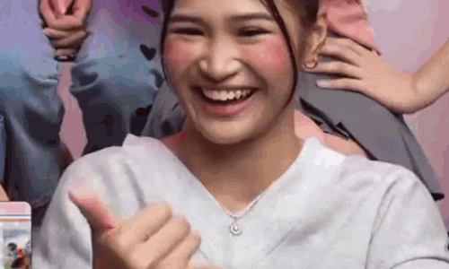
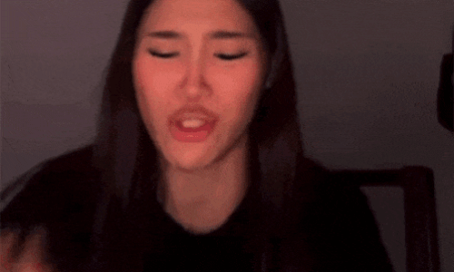
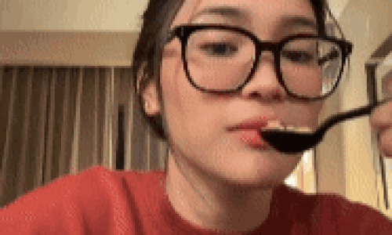

Jhoanna Christine Burgos Robles (born January 26, 2004) better known as Jhoanna,
is a Filipino artist and performer. She is the leader, second youngest member,
lead vocal & lead rapper of the Filipino girl group BINI.
Jhoanna's favorite color is Black, White & Mustard Yellow.
Jhoanna’s hobby is listening to music.
Her special talent is news reporting.
Jhoanna’s favorite SHA subject is singing.
Her favorite Motto is:” Don't just dream it, do it.”
Popular line: "Grabe naman mga trust issues niyoOOoOoOoo!"
She also refer as "Maharani", a song by Alamat in which, Jhoanna MV collab with them.